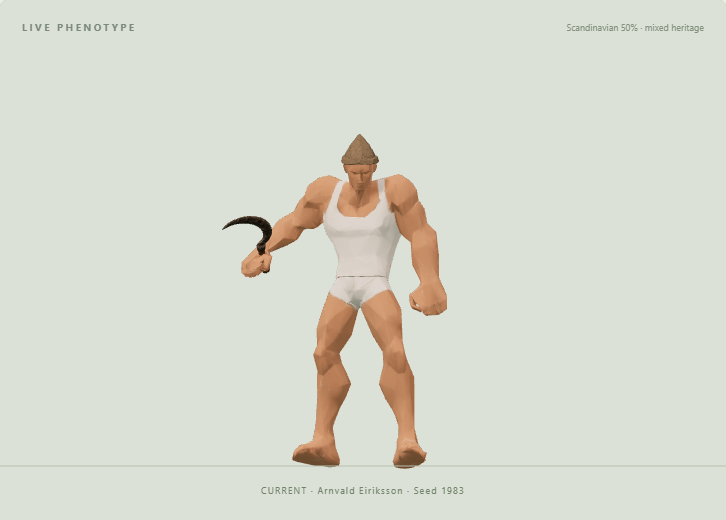
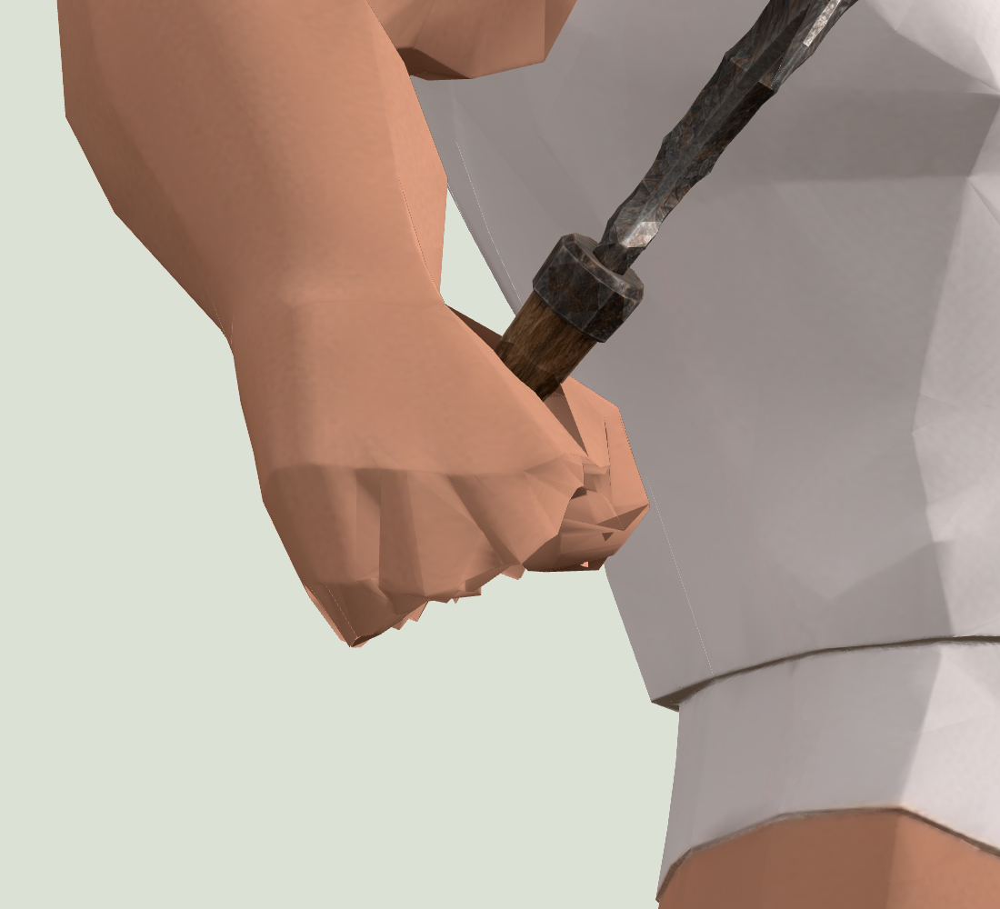
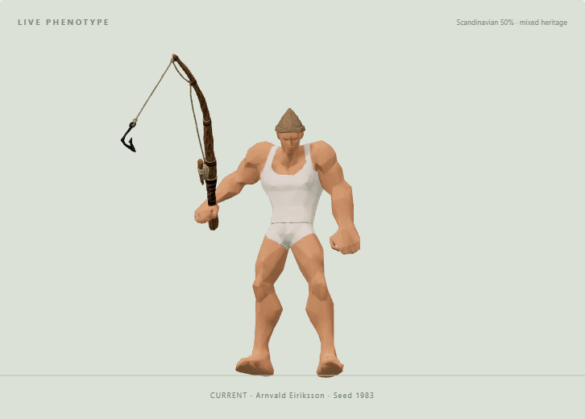
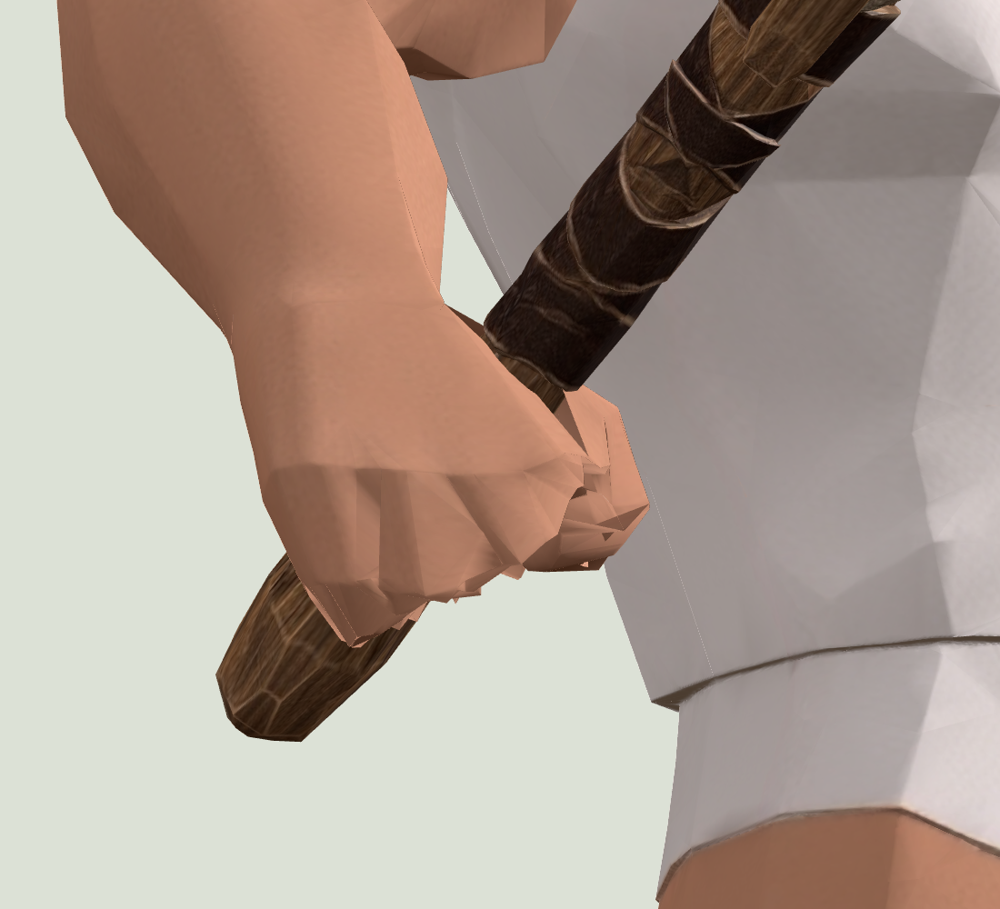
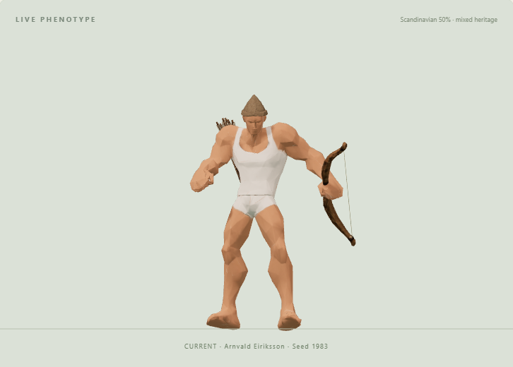
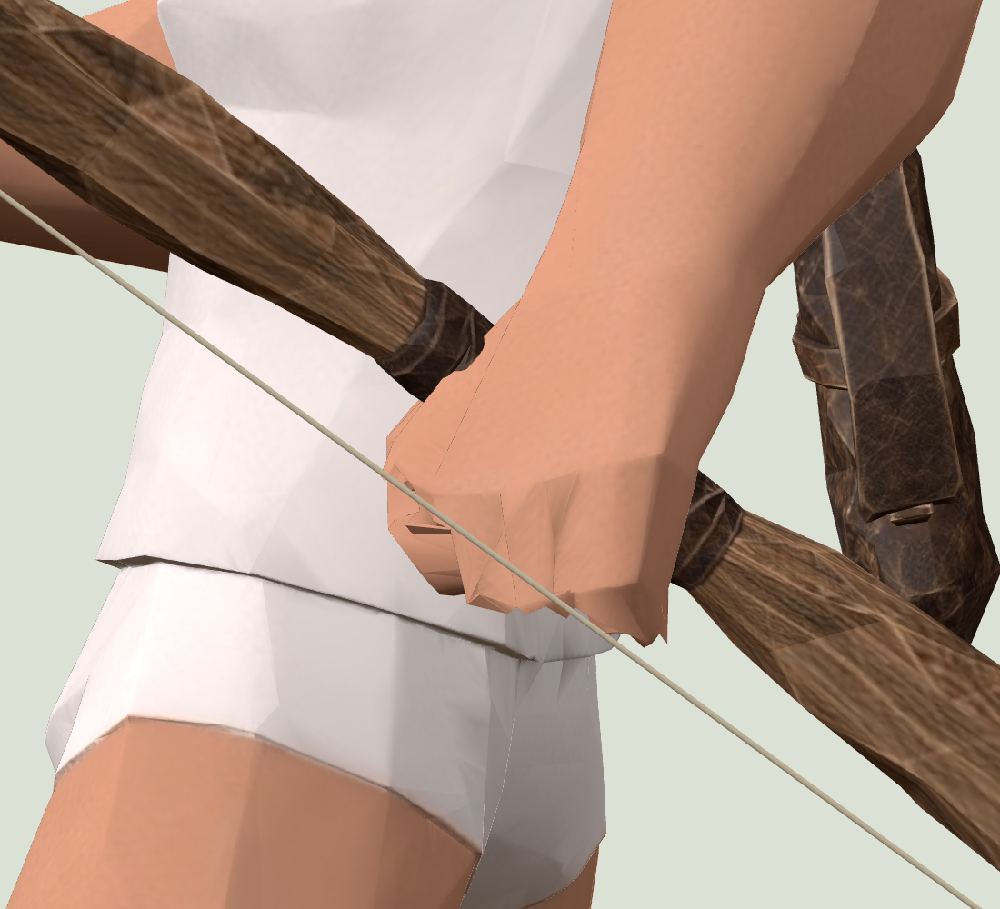
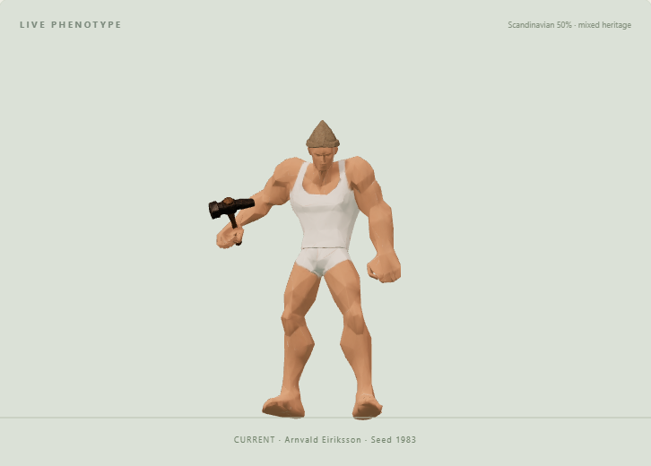
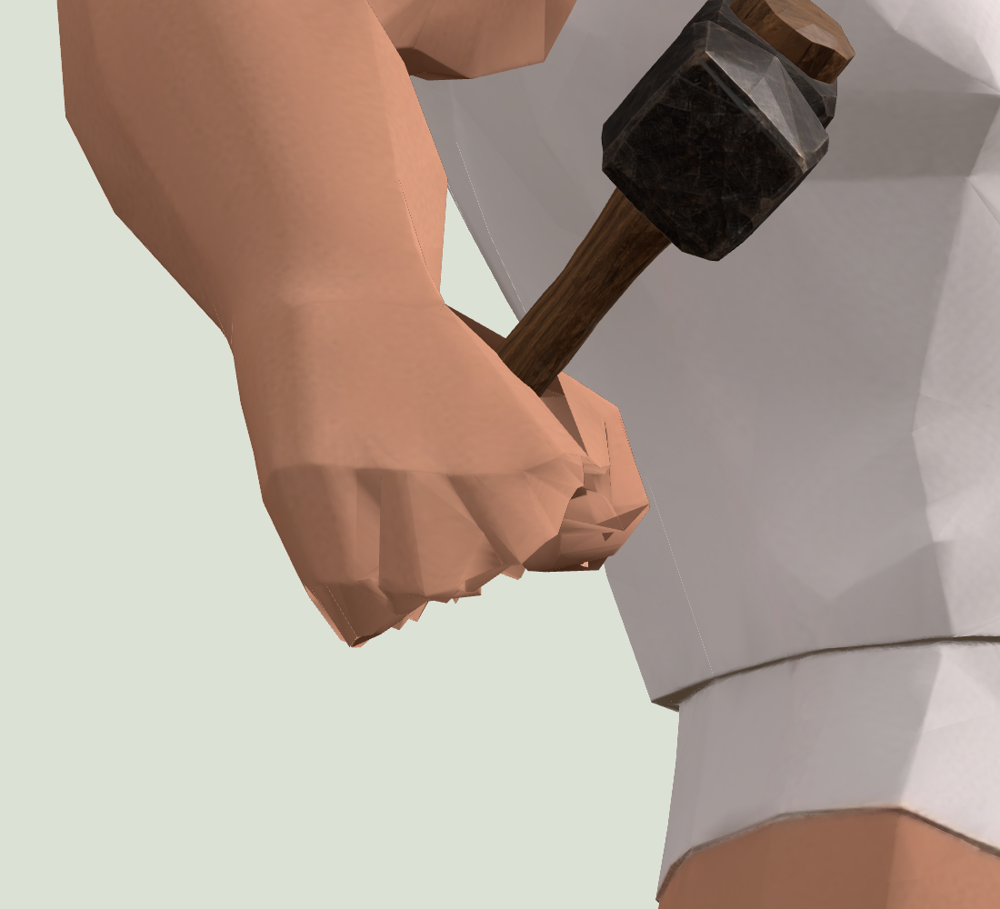

Farmer · sickle
Open in Character Lab

Handles pass through the curved finger grip. Closed native fingers and a bounded arm carry layer are used during Idle, Walking and Running. Work clips and Native neutral keep their original poses.
Interactive clothing / hair / pose / grip review







